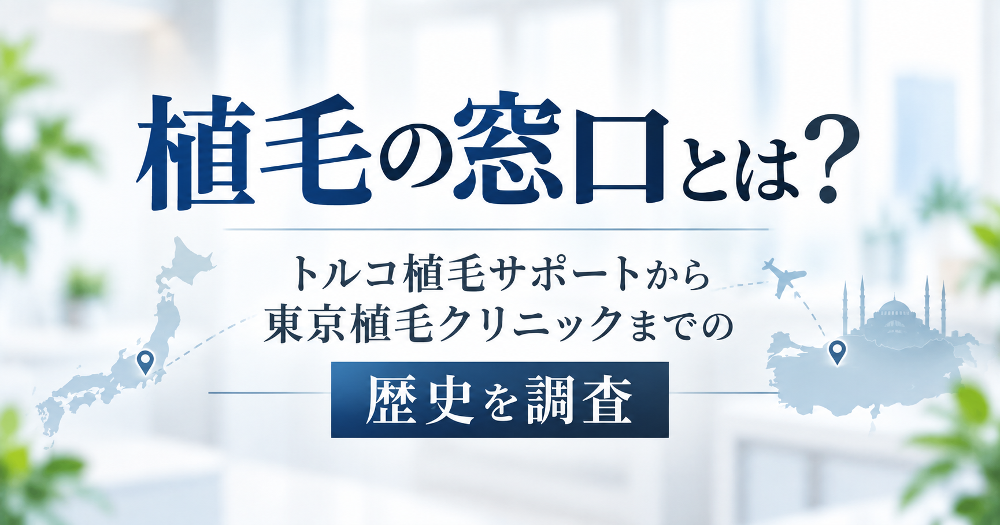

「植毛の窓口」を調べていると、「東京植毛クリニックと同じ会社なの？」「昔はトルコ植毛を紹介していたはず」 「今はどうなっているの？」といった疑問にぶつかります。この記事では、公式サイト・本人インタビュー・法人登記情報などの 公開情報をもとに、植毛の窓口の成り立ちから現在までを時系列で調査しました。 「植毛の窓口」「Esteworld」「東京植毛クリニック」「山本祐司氏」の4者の関係を、誤解のないよう整理することを最優先にしています。
この記事でわかること
植毛の窓口（株式会社薄毛の窓口）の運営者・法人情報／トルコ植毛サポート時代のサービス内容／ Esteworldとの関係／東京植毛クリニックとの関係（同じ運営元かどうか）／現在も海外植毛を申し込めるか／ 確認できた事実の年表
植毛の窓口とは？
「植毛の窓口」は、海外の自毛植毛クリニックを紹介・アテンドするサービスで、サイト上では「薄毛の窓口」「植毛の窓口」の 両方の表記が使われています（運営法人名は株式会社薄毛の窓口）。現行サイト（usugenomadoguchi.com）は 「トルコ植毛実績No1」を掲げ、トルコの「Esteworld」との提携を前面に打ち出しています（2026年9月確認）。
会社概要ページによると、事業内容は「技術力のある海外自毛植毛クリニックの情報提供、各種美容整形病院紹介、予約手配、 現地での専任アテンダントの通訳・サポート」「旅行業又は旅行業法に基づく旅行業」「病院等に対する経営指導・事務業務の受託」と 記載されています。「海外植毛の紹介・渡航サポート」に加えて「病院への経営指導」も事業内容に含まれている点は、 後述する東京植毛クリニックとの関係を考えるうえで参考になります。
誰が運営しているのか
| 項目 | 内容 |
|---|---|
| 法人名 | 株式会社薄毛の窓口 |
| 法人番号 | 6010001220945 |
| 設立年月日 | 2021年9月1日（会社概要ページ記載） |
| 代表者 | 代表取締役社長 山本祐司 |
| 本店所在地 | 神奈川県横浜市港南区笹下1丁目9番4-503号 |
| 東京営業所（gBizINFO上は事業所） | 東京都港区芝大門2-10-4 SGビル4階 |
| 資本金 | 31,002,390円（会社概要ページ記載） |
山本祐司氏は、植毛の窓口の運営会社である株式会社薄毛の窓口の代表取締役社長であり、創業者でもあります。 山本氏自身の経歴や植毛体験については、別記事 「東京植毛クリニックの代表・山本祐司氏とは何者？」 で詳しく調査しています。
もともとはトルコ植毛をサポートしていた
PR TIMESで配信された創業ストーリー記事（2023年5月31日配信）や本人インタビュー記事によると、 山本氏は自身の海外植毛経験をきっかけに情報発信を始め、反響を受けて起業。 当初は中国・マレーシア・トルコの3ヶ国のクリニックと業務提携していたことが記事内で語られています。 現行サイトではトルコ（Esteworld）のみが前面に出ていますが、これは現在の状態であり、 「最初からトルコ・Esteworld専業だった」わけではなさそうです。 中国・マレーシアとの提携が現在も続いているかどうかは、今回確認した範囲のページからは判断できませんでした。
トルコが大きく注目されるきっかけとして、記事では「2021年12月、芸能人のいしだ壱成氏の3度目の離婚報道後、 山本氏がSNS経由でメッセージを送り、トルコでの植毛をサポートした」ことが挙げられており、 これが話題となり事業成長の契機になったとされています。
当時のトルコ植毛はどんな流れだった？
現行サイトの説明（現在の運用として書かれているもので、必ずしも過去の全期間の運用と同一とは限りません）を整理すると、 植毛の窓口が担当する範囲とEsteworld側が担当する範囲は、次のように分かれます。
- 無料相談・オンラインカウンセリング（植毛の窓口）
- 渡航手配：航空便の提案、通訳の手配、ホテルの手配、送迎サービスの手配（植毛の窓口）
- トルコ渡航、現地でのカウンセリング・施術（Esteworld）
- 帰国後のフォロー：「1年間フォロー料」として定着率向上のアドバイスを実施（植毛の窓口が窓口となり実施）
料金は現行ページで「総額75万円（税込82.5万円）、株数にかかわらず一律」とされ、 別途ホテル代・送迎代（目安約3万円）、航空券代（目安10〜20万円以上）が必要という説明でした。 キャンセルポリシーやトラブル発生時の対応窓口の詳細については、今回確認したページの範囲では具体的な記載が見当たりませんでした。
なぜトルコ・Esteworldだったのか
植毛の窓口の現行サイトでは、Esteworldを選ぶ理由として、Esteworld側の設備・実績（麻酔科専門医の常駐、 DHI法の採用、多数の手術室、提携ホテル・送迎サービスの完備など）が紹介されています。 また「何株植えても一律料金」という価格の分かりやすさも、サイト上でメリットとして強調されています。
山本氏自身がトルコを選んだ理由については、本人の経験談としては「中国での自毛植毛」が原点であり、 トルコとの提携は事業拡大の過程で構築されたものと読み取れます。「なぜ数あるトルコのクリニックの中でEsteworldを選んだのか」 という選定理由そのものを本人が明確に説明している一次情報は、今回の調査では見つけられませんでした。
実際に利用した人はいる？（二次情報）
植毛の窓口の実際の利用者による体験談は、主に個人のnoteやブログ記事として見つかりました。 例えば、noteに投稿された体験記事では、東京植毛クリニックの評判・料金についてのレビューが個人の視点で書かれています。 こうした体験談はあくまで個人の体験であり、全利用者に共通する結果を示すものではありません。 本記事では公式情報と明確に区別したうえで、参考情報の一つとして紹介するにとどめます。
なお、今回の調査では、トルコ渡航時代（Esteworldでの施術）についての詳細な個人体験談を、 信頼できる形で十分な数、確認することはできませんでした。口コミ・体験談を検討材料にする場合は、 投稿者の属性や投稿時期（トルコ渡航時代のものか、東京植毛クリニック開院後のものか）を確認することをおすすめします。
山本祐司氏はなぜ植毛事業を始めた？
簡潔にまとめると、山本氏は20代前半に薄毛に悩み、国内クリニックの高額な見積もりを機に中国で自毛植毛を受けた経験を ブログ・YouTubeで発信したところ反響を集め、それが植毛の窓口の設立につながったとされています。 植毛の窓口自身の言葉としては「日本でお金がなくて植毛できない人たちのために、もっと安く植毛できる選択肢を提供するため、 本事業を立ち上げました」という趣旨の説明（会社概要ページ）があります。
山本氏本人の経歴・薄毛体験・中国渡航の経緯・毛髪診断士取得までの詳しい調査は、別記事 「東京植毛クリニックの代表・山本祐司氏とは何者？」 にまとめています。
その後、東京植毛クリニックを開院
植毛の窓口はその後、東京都港区芝大門に「東京植毛クリニック（esteworld JAPAN）」を開設しました。 PR TIMESで配信された「東京植毛クリニック開業ストーリー」という記事は2023年5月31日付で配信されており、 当時の価格（約80万円）や、国内相場（約300万円前後）との比較による「価格破壊」という打ち出し方、 「エステワールドの日本拠点」というコンセプトが紹介されていました。ただし、この記事にも開院の具体的な年月日の明記はありませんでした。
一方、第三者のクリニック紹介・比較サイトの一部には「2024年6月開院」とする記載も見られますが、 いずれも一次情報への出典が明示されておらず、今回の調査では開院時期を単一の日付として確定することができませんでした。 「植毛の窓口からトルコEsteworldへのサポート事業を経て、東京植毛クリニックの開院に至った」という大きな流れ自体は 双方の公式サイトの説明と整合していますが、各段階の正確な移行時期（トルコ提携開始年、東京植毛クリニック開院日）は、 公開情報からは特定できませんでした。
植毛の窓口と東京植毛クリニックは同じなの？
読者が最も混乱しやすい部分なので、確認できた事実に基づいて整理します。
- 国税庁の法人番号制度に基づくgBizINFOのデータでは、株式会社薄毛の窓口の事業所所在地として 「東京都港区芝大門2-10-4 SGビル4階」が登録されており、この住所は東京植毛クリニックの所在地と同一です。
- 「東京植毛クリニック」という名称を冠した別の法人は、今回の調査では見つかりませんでした。
- 代表者はいずれも山本祐司氏です（植毛の窓口の代表取締役社長、東京植毛クリニックの「代表」表記）。
以上から、植毛の窓口と東京植毛クリニックの間には強い関連があることは確認できます。 一方で、医療機関としての「開設者」「運営主体」が法律上どの主体（法人か、氏家医師個人かなど）にあたるのかを 直接示す一次情報（開設許可情報など）までは、今回の公開情報から確認できませんでした。 そのため「両者は同一法人が運営している」と断定はせず、「事業所住所・代表者が一致するという事実が確認できる」という 範囲にとどめて理解するのが適切です。山本氏が両サービスで全く同一の権限を持つのか、契約上の区分（部門か別プロジェクトか）が あるのかも、公開情報からは分かりませんでした。
現在もトルコ植毛は申し込める？
現行の植毛の窓口サイト（usugenomadoguchi.com）は、2026年9月確認時点でもトルコ・Esteworldへの渡航植毛サービスを 案内しており、「連携している東京植毛クリニックで術後ケアまで完備」という記載もあります。 つまり、東京植毛クリニック開院後も、海外（トルコ）渡航型のサービス自体は継続して案内されており、 国内施術（東京植毛クリニック）と海外渡航型（植毛の窓口経由のトルコ植毛）が並行して案内されている状態です。
どちらを選ぶかによって「渡航の要否」「担当医」「価格体系」が異なるため、両者は別の選択肢として案内されていると考えられます。 中国・マレーシアのクリニックとの提携が現在も継続しているかどうかは、確認できませんでした。
年表｜確認できた事実
年が確認できた出来事だけを年表にしています。推定で埋めた年は含めていません。
| 時期 | できごと |
|---|---|
| 2021年9月1日 | 株式会社薄毛の窓口 設立（会社概要ページ記載） |
| 2021年12月 | いしだ壱成氏の離婚報道を機に、山本氏がSNSでトルコ植毛をサポート（PR TIMES記事より） |
| 2023年5月31日 | PR TIMESで「東京植毛クリニック開業ストーリー」記事が配信（記事の配信日。開院日そのものではない点に注意） |
| 2026年9月 | 本記事執筆時点。植毛の窓口サイト・東京植毛クリニックサイトともに稼働を確認 |
「植毛の窓口の設立」から「トルコ提携の開始」「東京植毛クリニックの開院」までの間の具体的な年は、 公開情報からは特定できなかったため、年表には含めていません。「開院は2024年6月」とする記載も見かけましたが、 一次情報での裏付けが取れなかったため、年表には反映していません。
ご注意
本記事は一般的な情報提供を目的としており、効果や結果を保証するものではありません。 治療の適応や見込みには個人差があります。実際の検討にあたっては、必ず医療機関で医師にご相談ください。
調査して分からなかったこと
- 植毛の窓口とEsteworldが提携を開始した具体的な年月
- 東京植毛クリニックの正確な開院年月日（情報源により2023年頃／2024年6月など記載が分かれる）
- 中国・マレーシアのクリニックとの提携が現在も続いているか
- クリニックの医療法上の開設者が個人（医師）か法人かという点
- 山本氏がなぜ数あるトルコのクリニックの中でEsteworldを選んだのか、その選定理由
- キャンセルポリシーやトラブル対応の詳細な取り決め
- 植毛の窓口経由での過去の利用者数・トルコ渡航実績の総数
これらは「情報が確認できなかった」というだけであり、隠蔽や不正を示唆するものではありません。
まとめ｜海外植毛サポートから国内植毛へ
植毛の窓口は、山本祐司氏が自身の植毛体験をもとに2021年9月に設立した株式会社薄毛の窓口が運営するサービスで、 当初は中国・マレーシア・トルコのクリニックと提携した渡航植毛サポートを展開し、 その後トルコのEsteworldとの関係を軸に、東京都港区の「東京植毛クリニック（esteworld JAPAN）」開設に至りました。 法人登記情報（gBizINFO）を確認する限り、株式会社薄毛の窓口の事業所所在地と東京植毛クリニックの所在地は一致しており、 両者には強い関連が確認できますが、医療機関としての開設者・運営主体まで株式会社薄毛の窓口であると断定できる一次情報は、 今回確認できませんでした。開院時期の確定や、Esteworldとの契約詳細など、確認しきれなかった点も残ります。
東京植毛クリニックを検討する場合は、「誰が運営しているか」「渡航が必要な海外植毛と国内施術のどちらを選ぶか」 「実際の執刀医は誰か」を整理したうえで、無料カウンセリングの場で直接確認することをおすすめします。
参照した情報
植毛の窓口公式サイト（usugenomadoguchi.com、トップページ・会社概要ページ・esteworld紹介ページ・tsc01/tsc03ページ、2026年9月確認）／ 東京植毛クリニック公式サイト（tokyo-shokumou.jp、2026年9月確認）／ THE INNOVATOR「株式会社薄毛の窓口 山本祐司」インタビュー記事／ PR TIMES STORY「いしだ壱成の植毛で話題 薄毛対策に価格破壊をもたらした東京植毛クリニック開業ストーリー」（2023年5月31日配信）／ gBizINFO 法人情報（法人番号6010001220945、株式会社薄毛の窓口）。 記載内容は変更される可能性があるため、最新情報は必ず各公式サイトでご確認ください。